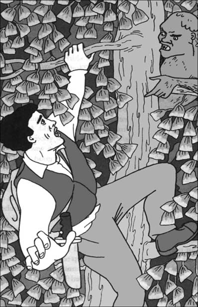
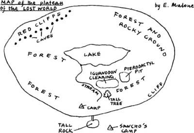

7
Listen to Part 1:

Cái chết trong đêm
Ngày hôm sau, chúng tôi nán lại ở trại cả ngày. Chúng tôi chặt nhiều cành cây hơn và dùng chúng làm thành một bức tường kiên cố hơn xung quanh trại. Cả ngày, tôi cứ nghĩ rằng có ai đó đang theo dõi chúng tôi. Nhưng tôi không thấy gì cả.
Vào đêm đó – đêm thứ hai của chúng tôi ở Thế giới đã mất – chúng tôi nghe thấy một tiếng động kinh hoàng. Chúng tôi đang ngủ bên đống lửa. Đột nhiên, chúng tôi bị đánh thức bởi một tiếng kêu thảm thiết. Tiếng kêu phát ra từ rất gần trại chúng tôi.
Nhiều tiếng kêu và tiếng la hét khác nữa tiếp theo sau. Thật khiếp đảm khi nghe thấy những tiếng đó. Đó là tiếng kêu của một con vật. Một con vật đang đau đớn tột cùng.
Tôi lấy tay bịt tai. Nhưng tôi vẫn có thể nghe thấy những tiếng kêu thảm thiết đó. Tiếng kêu kéo dài trong vài phút. Sau đó chúng dừng lại. Rừng trở lại im ắng.
‘Đó là cái gì?’ Tôi thì thầm.
‘Chúng ta sẽ biết vào sáng mai,’ Lord Roxton nói. ‘Những âm thanh đó phát ra rất gần chúng ta.
‘Nghe này!’ Giáo sư Summerlee nói. ‘Có thứ gì đó đang tiến về trại mình.’
Chúng tôi lắng nghe. Chúng tôi nghe thấy tiếng bước chân nặng nề của một con vật to lớn. Có thứ gì đó đang đi vòng quanh trại. Rồi nó dừng lại. Chúng tôi cầm súng lên.
Lord Roxton nhìn ra ngoài bức tường cành cây.
Listen to Part 2:
‘Tôi thấy nó!’ Anh ấy nói.
Tôi tiến lại và đứng cạnh anh ấy. Tôi thấy một hình dáng màu đen lớn dưới bóng cây. Tôi nghe thấy tiếng rít lớn. Rồi tôi thấy hai con mắt màu xanh lá cây đáng sợ. Sinh vật đó đang tiến về phía chúng tôi.
‘Nó sẽ tấn công chúng ta!’ Tôi nói.
Rồi Lord Roxton đã làm một hành động rất dũng cảm. Anh ấy cầm một khúc cây đang cháy từ đống lửa. Anh ấy chạy ra khỏi trại về phía sinh vật kia. Ánh sáng của khúc cây đang cháy rất sáng. Tôi nhìn thấy một khuôn mặt khủng khiếp. Sinh vật đó có cái đầu của một con thằn lằn rất lớn. Có máu trên miệng và trên những chiếc răng sắc nhọn của nó.
Lord Roxton dí khúc cây đang cháy vào khuôn mặt to lớn của sinh vật. Sinh vật đó sợ hãi quay đi. Ngay sau đó, nó bỏ đi mất.

Sáng hôm sau, chúng tôi tìm thấy xác một con khủng long iguanodon gần trại. Thân của nó bị xé thành nhiều mảnh. Máu ở khắp mọi nơi.
‘Con khủng long iguanodon này đã bị giết bởi sinh vật khủng khiếp mà chúng ta đã thấy đêm qua,’ Giáo sư Challenger nói. ‘Sinh vật đó là một con khủng long ăn thịt rất lớn – một allosaurus, hoặc có lẽ là một megalosaurus.’
Lord Roxton đang cẩn thận quan sát chân của con khủng long iguanodon đã chết.
‘Dấu vết trên da này là gì?’ Anh ấy hỏi. ‘Thật kỳ lạ.’
Listen to Part 3:
Có một vòng tròn màu đen lớn trên lớp da bóng của con khủng long iguanodon.
‘Trông giống như nhựa đường. Và nó dính nữa,’ Giáo sư Summerlee nói. ‘Vậy thì phải có nhựa đường trên cao nguyên này. Nhưng làm sao nó lại dính vào da con iguanodon?’
Chúng tôi đi trong rừng cả ngày. Chúng tôi tìm thấy những loài hoa và cây cảnh xinh đẹp. Cũng có những cây có trái ăn ngon.
Chúng tôi nhìn thấy thêm vài con khủng long iguanodon nữa. Chúng cũng có những vòng tròn nhựa đường trên da. Những dấu vết này có ý nghĩa gì?
Buổi tối hôm đó trong trại, Lord Roxton nói, ‘Ngày mai chúng ta sẽ làm gì?’
‘Chúng ta đã chứng kiến đủ về Thế giới đã mất rồi,’ Giáo sư Summerlee trả lời. ‘Bây giờ chúng ta phải nghĩ cách rời khỏi đây.’
‘Cái gì, Summerlee!’ Giáo sư Challenger hét lên. ‘Chúng ta là các nhà khoa học. Chúng ta phải tìm hiểu thêm về nơi tuyệt vời này.’
‘Không,’ Giáo sư Summerlee nói. ‘Thế giới đã mất rất thú vị. Nhưng nó cũng rất nguy hiểm. Chúng ta phải rời khỏi đây ngay. Những con khủng long sẽ giết chúng ta. Nếu vậy, sẽ không ai ở London từng biết được toàn bộ câu chuyện này.’
Giáo sư Challenger suy nghĩ hồi lâu.
‘Ông đúng, Summerlee à,’ cuối cùng ông nói. ‘Chúng ta phải quay về London. Nhưng tôi muốn có bản đồ Thế giới đã mất. Tôi muốn cho mọi người ở quê nhà xem.’
Listen to Part 4:
Rồi tôi có một ý tưởng tuyệt vời. Một cây to lớn đang mọc gần trại chúng tôi. Khi còn nhỏ, tôi rất giỏi trèo cây.
‘Để tôi trèo lên cây đó,’ tôi nói. ‘Tôi sẽ có thể nhìn thấy toàn bộ cao nguyên từ trên đỉnh. Sau đó tôi có thể vẽ bản đồ.’
Những người bạn của tôi rất hài lòng với ý tưởng của tôi. Vậy là tôi bắt đầu trèo lên cây. Việc trèo không khó. Nhưng cành cây và lá cây rất dày. Tôi không thể nhìn thấy bầu trời phía trên đầu mình.
Đột nhiên, tôi hoảng sợ tột độ. Một khuôn mặt đang nhìn chằm chằm vào tôi! Đó là một khuôn mặt xấu xí – giống con người và giống cả con vượn. Đôi mắt của nó độc ác và miệng nó có nhiều răng nanh dài nhọn.
Trong vài giây, Người vượn và tôi nhìn chằm chằm vào nhau. Rồi khuôn mặt đó biến mất. Một cơ thể có lông đỏ di chuyển trong đám lá.
Cuối cùng thì tôi cũng lên đến đỉnh cây. Từ đó, tôi nhìn thấy một cảnh tượng tuyệt vời. Trời đã muộn và mặt trời đang lặn. Dưới ánh sáng màu vàng, tôi có thể nhìn thấy toàn bộ cao nguyên ở phía dưới. Có một hồ nước lớn ở giữa cao nguyên. Nước hồ xanh và đẹp dưới ánh sáng ban chiều. Ở bên kia hồ là một dãy vách đá màu đỏ. Trên vách đá có một số hang tối. Chúng trông giống như những hang động.

Đột nhiên, tôi hoảng sợ tột độ. Một khuôn mặt đang nhìn chằm chằm vào tôi!
Trời bắt đầu tối. Tôi lấy một cuốn sổ tay ra khỏi túi và vẽ bản đồ cao nguyên. Sau đó, tôi lại trèo xuống cây.
Những người bạn của tôi rất vui khi thấy tôi. Tôi chỉ cho họ bản đồ của mình. Sau đó, tôi kể cho họ nghe về Người vượn.
Listen to Part 5:

‘Anh ta đã theo dõi chúng ta từ trên cây đó,’ tôi nói. ‘Khi chúng ta đi vắng, anh ta đã đến trại của chúng ta. Tôi chắc chắn rằng anh ta đã làm hỏng những món đồ của chúng ta.’
‘Bây giờ ông có hiểu chưa, Challenger?’ Giáo sư Summerlee nói. ‘Chúng ta không được an toàn ở đây. Có nguy hiểm rình rập khắp nơi. Chúng ta phải lên kế hoạch để rời khỏi đây.’
‘Được,’ Giáo sư Challenger nói. ‘Malone, anh đã làm tốt lắm. Bây giờ chúng ta có bản đồ tốt về Thế giới đã mất. Ngày mai, tôi hứa sẽ nghĩ ra cách thoát xuống.’
Mục lục
- Bìa sách
- Trang tiêu đề
- Trang thông tin bản quyền
- Mục lục
- Ghi chú về tác giả
- Ghi chú về truyện
- Nhân vật trong truyện
- 1 Tôi gặp Giáo sư Challenger
- 2 Câu chuyện của giáo sư
- 3 Hành trình bắt đầu
- 4 Sông Amazon
- 5 Một điều khủng khiếp xảy ra
- 6 Sinh vật thời tiền sử
- 7 Cái chết giữa đêm
- 8 Cuộc đi bộ kinh hoàng
- 9 Bị bắt giữ bởi Người vượn
- 10 Trận chiến
- 11 Thoát khỏi Thế giới bị lãng quên
- 12 Chúng tôi trở về London
- Điểm để hiểu